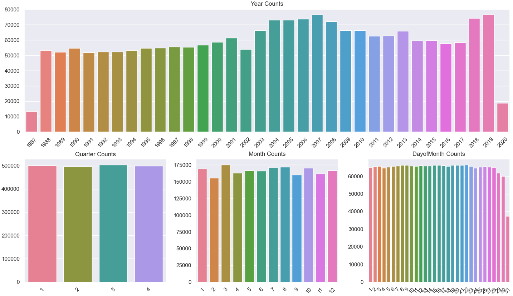
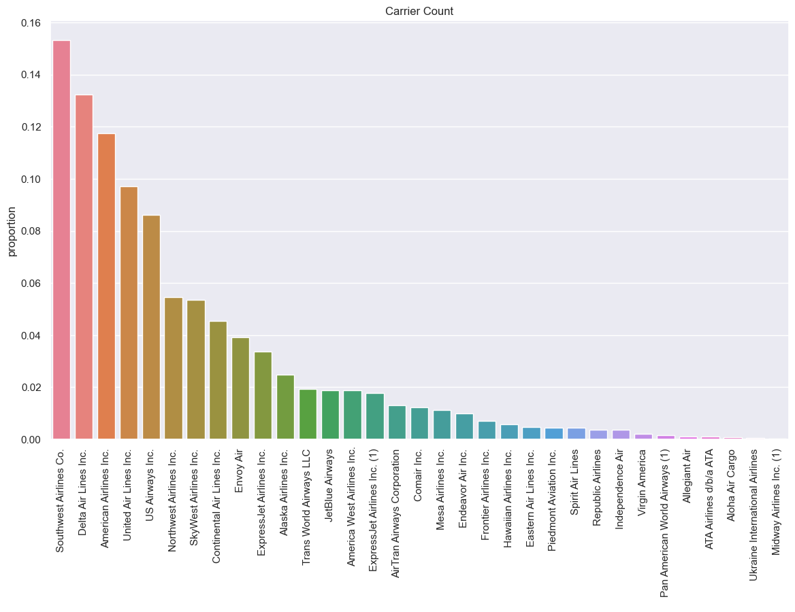
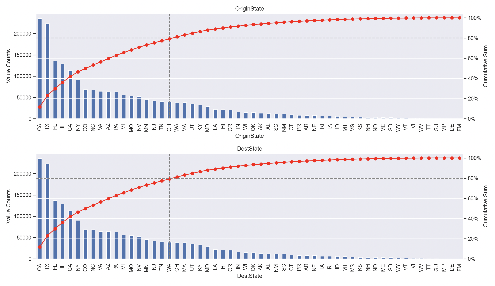
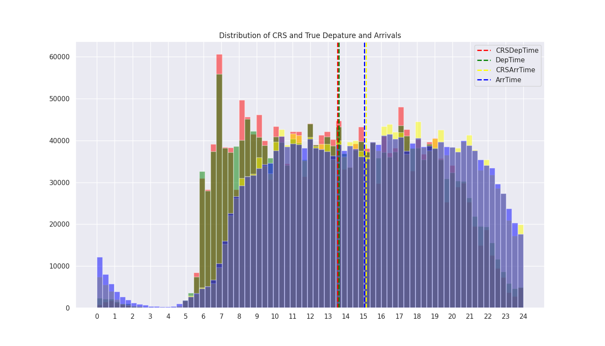
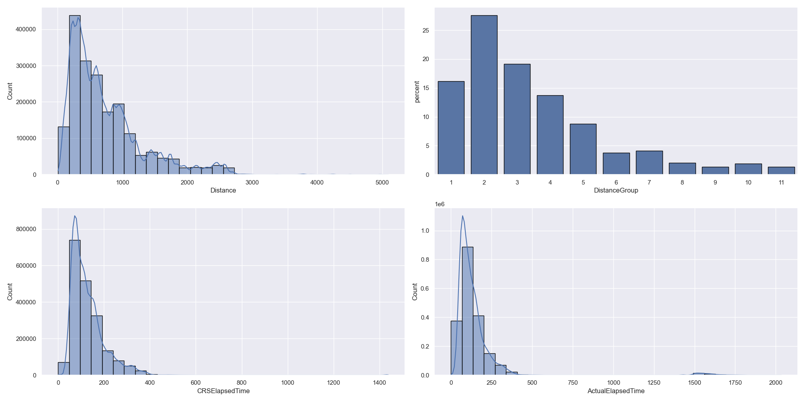

Airline On-Time Performance
Longitudinal Trends, Carrier Delays, and Geographic Patterns in the US Airline Industry

Executive Summary
This project analyzes on-time performance trends from 30 years of US domestic flight data, focusing on variations across carriers, routes, airports, and time. The goal is to conduct a comprehensive exploratory data analysis (EDA) to address key industry questions, such as identifying carriers and airports with the highest frequency of flight delays, understanding the impact of departure delays on arrival times, and examining trends in flight delays within the US aviation sector. The findings from the EDA will be translated into an interactive visualization dashboard using Streamlit.
Dataset
The Airline Reporting Carrier On-Time Performance Dataset, sourced from the U.S. Department of Transportation’s Bureau of Transportation Statistics, contains scheduled and actual departure and arrival times reported by certified U.S. air carriers between 1987 and 2020. The version used in this project, available at IBM Developer1, contains a 2 million record sample of the full dataset (<1%).
1 The dataset is available in three sizes: the original dataset of 194,385,636 flights, a 2 million sample version and a 2 thousand sample of flights from LAX to JFK airport. All three versions are available as gzip compressed tar or csv files.
Key features reported by carriers include scheduled and actual event times, flight dates, carrier, origin and destination information, cancelation and diversion information, as well as summary statistics such as elapsed time, distance and delay causes. A full description of the variables in the dataset can be found here. Below is a summary of the main variable grouppings.
Feature glossary
- Temporal variables:
Year,Quarter,Month,DayofMonth,DayOfWeek,FlightDate - Flight variables:
Reporting_Airline,Tail_Number,Flight_Number_Reporting_Airline - Origin/Destination variables:
OriginAirportID,Origin,OriginCityName,OriginState,OriginStateName,
DestAirportID,Dest,DestCityName,DestState,DestStateName
- Departure/Arrival time variables:
CRSDepTime,DepTime,DepDelay,DepDelayMinutes,DepDel15,DepartureDelayGroups
CRSArrTime,ArrTime,ArrDelay,ArrDelayMinutes,ArrDel15,ArrivalDelayGroups
- Taxi variables:
TaxiOut,WheelsOff,WheelsOn,TaxiIn - Cancellation variables:
Cancelled,CancellationCode,Diverted - Flight summary variables:
CRSElapsedTime,ActualElapsedTime,AirTime,Flights,Distance,DistanceGroup - Cause of Delay (Data starts 6/2003):
CarrierDelay,WeatherDelay,NASDelay,SecurityDelay,LateAircraftDelay
Preprocessing and Feature Engineering
The strategy for preprocessing interleaves univariate analysis with data cleaning and feature engineering for each variable group, utilizing the former to contextualize preprocessing decisions in the latter. For this project, this approach encompases three major aspects: conducting a general univariate analysis, preprocessing flight info variables, and (re)engineering time variables.
Univariate Analysis
For each variable group, I conducted a univariate analysis to understand the distribution, spread, and missing values of the variables using two custom functions:
df_overview prints the shape, sample head and tail, and non-null counts.
def df_overview(df):
print(f"Shape: {df.shape}\n")
print(f"Head and tail preview:")
display(df)
print(f"Df info:")
print(df.info(verbose=True), "\n")
print("-"*70)
univariate_preview provides a compact report with the first five rows, data types, unique values, top 5 values, null value percentage, and summary statistics for continuous variables.
def univariate_preview(df, cols, describe=True):
display("Data Preview")
display(df[cols].head())
display("Value Counts")
list = []
for col in cols:
list.append(
[col,
df[col].dtypes,
df[col].nunique(),
df[col].value_counts().iloc[:5].index.tolist(),
"{:.2f}%".format(df[col].isna().mean()*100)]
)
display(pd.DataFrame(list,
columns = ['columns', 'dtypes', 'nunique', 'top5', 'na%']
).sort_values('nunique', ascending=False))
if describe:
display("Summary Stats")
display(pd.concat([
df[cols].describe(),
df[cols].skew().to_frame('skewness').T,
df[cols].kurtosis().to_frame('kurtosis').T,
]))Additionally, I visualized missing values using the missingno package2, while certain distributions and value counts I visualized using matplotlib and seaborn.
2 The missingno package offers visualization options such as heatmaps, bar charts, and dendrograms to identify patterns and distributions of missing data.
Preprocessing Flight Info Variables
The first half of all preprocessing focused on the flight information variables, including date, flight, origin/destination, and departure/arrival variables. Based on the findings of each univariate analysis, I performed the following preprocessing steps:
- Data Cleaning
FlightDatetodatetime64[ns]: allowed to perform date operations, aggregations, and visualizations.- Filling Missing State and State Names: imputed missing state and state name values to reduce missing data.
- Standardizing City Names: standardized city names to ensure uniformity and remove single occurrences.
- Dropping Taxi, Cancelled, and Diverted Variables: removed variables due to high occurrence of missing values.
- Feature Engineering
- Airline Names: used an airlines dataset to map the airline codes to their respective airline names to provide more readable and insightful information.
- Unique Flight Identifier: explored creating a unique flight identifier by combining carrier code and flight number, to reduce ambiguity and identify unique flights more easily.
(Re)Engineering Time Variables
The second phase of preprocessing addresses a critical issue found in the dataset’s handling of time-related variables, particularly concerning flight delays. The delay variables were calculated from the raw timestamps, without accounting for time zone discrepancies, daylight savings time, and cross-midnight flights. This required developing an approach to impute time zone information, correct timestamps, and recompute delays accurately.
To address these issues, I implemented the following steps:
- Imputing Time Zone Information: assigned time zones to all timestamps using a dictionary of airport codes and their respective time zones sourced from two datasets.
- Reverse Engineering Arrival Dates: converted all times to UTC (Coordinated Universal Time), recalculated timestamps based on flight departure dates and time differences, and reconverted times to local time zones.
- Filter Remaining Negative Delays: removed the remaining negative delays after the reverse engineering process to ensure accurate delay calculations.
- Delay Calculation: calculated delays based on the difference between scheduled and actual departure and arrival times, accounting for time zone differences and daylight savings time.
In addition to this, I also performed the following data cleaning and feature engineering steps:
- Data Cleaning:
- Standardizing 0s, 2400s, and missing values: converted 0s to Nan values and 2400s to 0s for consistency in time representation.
- Filling Missing CRS Values: imputed missing values in the CRS (Scheduled) times from the difference between actual times and delay minutes.
- Changing Data Types: converted data types where necessary to improve computational efficiency.
- Feature Engineering:
- Datetime Conversion: created UTC versions of time variables for time calculations such as elapsed time.
- Time Recalculations: using the time zone marked timestamps, recalculated delays and elapsed times more accurately than the original dataset.
Exploratory Data Analysis
The Exploratory Data Analysis in this project was carried in two modalities: a methodical univariate analysis of each variable during preprocessing and a targeted bivariate and multivariate analysis focused on answering the research questions of the project3. I framed the questions around five distinct themes:
3 Most questions in this bivariate analysis adopt a longitudinal perspective, comparing the frequency of delays with different variables across the entire span of the dataset. This approach provides a historical view of delays within the US aviation sector. However, further insights lie within a cross-sectional analysis, which compares the frequency of delays across different variables at specific points in time. This would be more suitable for a multivariate analysis, which I leave for future work.
- Longitudinal: How do delays vary across time?
- Corporate: How do delays vary across carriers? (distribution and longitudinal)
- Directional: How do delays vary by route?
- Geographical: how do delays vary by airport?
- Correlation: are departures delays correlated with arrival delays? (or how frequent do flights make up for late departures?)
Before diving into the findings for each question, I will provide a brief overview of the findings from the univariate analysis.
Univariate Analysis
The univariate analysis revealed several key insights about the dataset:
Date columns: The flights span 34 years, with the distribution slightly shifted left (2005), indicating growth in the airline industry in the last 15 years. Other columns such as months, days, and weekdays, show an even distribution.
{kind=link}
Flight info columns: The dataset includes 33 unique carriers, with Southwest Airlines (WN), Delta Air Lines (DL), and American Airlines (AA) being the most frequent.
Origin/Destination columns: Flights originate and land in all 50 US states and five overseas territories, including Puerto Rico, US Virgin Islands, and Guam. The top destinations in the dataset are California (CA), Texas (TX), Florida (FL), Illinois (IL), Georgia (GA), and New York (NY).
{kind=link}
Time Variables: Departures are more frequent in the morning hours, while arrivals peak in the evening. The distribution of CRS and actual time variables for departures and arrivals are almost identical, indicating that the average size of flight delays is small across the dataset.
{kind=link}
Delay Variables: Approximately 80% of flights operate on-time, while around 20% experience delays (as by the industry-defined standard of exceeding 15 minutes). The distribution shows a right skew, with over 40% of flights arriving early by less than 15 minutes and about 30% arriving exactly on time. Out of all delayed flights, most fall within the 15 to 40-minute range.

Flight Summary Variables: Flights typically cover distances under 1000 miles, with a right-skewed distribution observed in the data. The majority of flights have durations under around 160 minutes or 2 hours and 40 minutes, as indicated by the right-skewed distributions of the elapsed time variables.
{kind=link}
Bivariate Analysis
How do delays vary across time?
This question involves a longitudinal analysis of the evolution of delayed flights over 34 years. It compares the continuous variable “number of delayed flights” with the categorical time variable, examining both departure and arrival delays
To answer this question, I first defined the time step by which to evaluate the evolution of delays. I chose to aggregate the data by month-year date, which provides a balance between granularity, interpretability and computational efficiency. Next, I decided on the metric to evaluate delays. Although the raw sum of delays is intuitive, normalizing the counts by the total flights per month offers a more accurate representation of delay frequency, as it adjusts for variations in monthly flight numbers.
With these definitions, I began by plotting the evolution in the number of delayed flights per month over the years, as shown in the figure below.
{kind=link}
The normalized plots above reveal several insights about the evolution of delays from a cross-sectional and longitudinal perspective:
- Cross-sectional observations:
- The line plot reveals periodic fluctuations in both departure and arrival delays, reflecting seasonal changes in delays within each year.
- A noticeable drop in delays occurs between approximately 2001 and 2003, potentially influenced by external economic factors4.
- Longitudinal observations:
- The regression plot shows an initial gap between departure and arrival delays, which converges over time to approximately 20% by the end of the dataset.
- The line plot demonstrates a reduction in the volatility of delays over the years, suggesting a slight stabilization in the frequency of delays.
4 One potential cause for this temporary drop in delays is the contraction in the airline industry that followed 9/11, reducing the amount of delays together with the number of flights (see this article)
This narrowing gap and reduction in delay volatility would have suggested an improvement in airline on-time performance, if it were not for the fact that the reduction is cause by an increase in departure delays rather than a decrease in arrival delays. The regression analysis demonstrates this: arrival delays have decreased only by 1%, while departure delays have risen by over 5% in the span of 30 years. This confirms that airlines have been unable to improve on-time performance at arrivals and have become less efficient in managing departure delays.
{kind=link}
{kind=link}
{kind=link}
How do delays vary across carriers?
This is one of the most frequently asked questions in the airline industry, as it provides insights into the performance of individual carriers and their overall competitiveness in the market. It requires a bivariate analysis comparing the frequency of delays across carriers. Most reports approach this question by comparing the total number of delays per carrier, but this approach can be misleading for two reasons:
- Flight Volume: Carriers with higher flight volumes are more likely to have higher delay counts, which can skew the results.
- Carrier Age: Older carriers have more historical data, which can also skew the results.
This analysis uses a more accurate metric: the normalized delay frequency. This metric adjusts the delay counts by the total number of flights per carrier6. This approach provides a more accurate representation of delay frequency, as it accounts for variations in flight volume and, to some extent, carrier age. Below are the plots of the normalized delay frequencies across carriers.
6 An alternative approach would be to normalize the counts by the age of the carrier. However, this would require data mapping each carrier to its age in the industry, which, at the time of writing this report, was not available for the carriers in this dataset.
{kind=link}
The normalized delay counts show a more robust comparison of on-time performance between airlines, even among those with higher flight volumes or varying ages. Each plot reveals several insights about carrier performance, however, the most revealing insights come from comparing the rankings of carriers across both departure and arrival delays.
- Consistent Rankings: JetBlue Airways, ExpressJet Airlines, and Frontier Airlines consistently rank among the top carriers with the highest frequency of delays, both at departure and arrival.
- Top Departure Delays: JetBlue Airways, ExpressJet Airlines, Frontier Airlines, Allegiant Air, and Southwest Airlines have the highest proportion of delays at departure.
- Top Arrival Delays: Piedmont Airlines, JetBlue Airways, ExpressJet Airlines, Conair, and Frontier Airlines have the highest proportion of delays at arrival.
- Lowest Delays: carriers with the lowest frequency of delays are either historical carriers with shorter operational histories recorded in the dataset, such as Pan American World Airways (operating long before the dataset’s start date), Midway Airlines, and Northwest Airlines, or regional carriers such as Hawaiian Airlines, Aloha Air Cargo, Endeavor Air, and SkyWest Airlines.
- Largest Differences: the largest difference between departure and arrival delays is observed for Southwest Airlines, which ranks 5th in departure delays but 20th in arrival delays.
For measuring carrier performance, the proportion of departure delays is probably the most relevant metric for several reasons. Departure delays are more under the carrier’s control, as they are influenced by factors such as boarding, fueling, and maintenance, which are all managed by the carrier. Furthermore, as confirmed by the correlation analysis, departure delays have a positive linear relationship with arrival delays, thus making them more likely to cascade into arrival delays. This causes colinearity between the two metrics, which can be misleading when comparing carriers. In addition to this, arrival delays are more influenced by external factors such as weather, air traffic control, and airport congestion, which are beyond the carrier’s control. Even with these factors aside, a carrier may still be able to mitigate arrival delays, making the metric less indicative of carrier performance.
Considering these factors, the carriers with the highest proportion of departure delays, which are also consistent across arrival delays, are JetBlue Airways, ExpressJet Airlines, and Frontier Airlines.
How do delays vary by airport?
Similar to the carrier analysis, this question involves comparing delay frequencies across airports. Also as one of the most posed questions in the airline industry, the goal is to identify airports with the highest frequency of delays, which can provide insights into the airport performance and their impact on the overall aviation sector.
There are two available metrics to evaluate delay frequencies across airports: total delays and normalized delay frequency. However, choosing a metric to answer this particular question proves challenging, as each metric reveals a completely different answer due to the univariate distribution of each metric.
- Total delays are skewed towards airport size: larger airports have more flights and thus more delays, which skews the distribution by airport size.
- Provides a more differentiated view of airport performance.
- Biased towards larger airports.
- Mean delays show high kurtosis: the distribution of delays across airports is highly concentrated around the mean, with most airports having a similar frequency of delays, which makes it difficult to distinguish between them when visualizing the data.
- Provides a more accurate representation of delay frequency.
- Fails to distinguish airports close to the mean and may maximize the effects of airports with few flights.
{kind=link}
For the purposes of visualizing the data, I chose to use the total delay counts for arrival delays due to several reasons. Firstly, it provides a more differentiated view of airport performance. Moreover, the question is usually posed in terms of identifying the most known airports with the highest frequency of delays, a question better answered by the total delay counts, which already favor larger airports. Furthermore, the choice of considering only arrival delays responds to the fact that departure delays are more susceptible to carrier operations7, whereas arrival delays are more influenced by external factors, including airport operations. This makes arrival delays a better metric for evaluating airport performance8. Below are the plots of the total delay counts across airports.
7 According to the Airline On-Time Statistics and Delay Causes, air carrier delays accounted for nearly 25% of national delays from January 2010 to March 2020
8 Of course, as stated in the previous section, airport management is not the only cause for arrival delays. There is also a moderate correlation between departure and arrival delays which increases after as certain threshold of departure delays. However, when comparing airports, arrival delays abstract the role of the carrier and focus on the external factors, among which is airport management.
Arrival Delays by Airport
The bubble map shows the distribution of arrival delays across airports, with the size of the bubble representing the total number of delays. Given the nature of the metric, the size of the bubbles favor larger airports, which have higher flight volumes and correspondingly higher delay counts. Several observations can be made from the visualization:
- Top Airports: the top five airports with the highest total delay counts are Chicago O’Hare International Airport (ORD), Hartsfield-Jackson Atlanta International Airport (ATL), Dallas/Fort Worth International Airport (DFW), Los Angeles International Airport (LAX), and San Francisco International Airport (SFO).
- Costal Airports: coastal airports such as Los Angeles (LAX), San Francisco (SFO), Newark (EWR), and Boston (BOS) also rank high among the top 15 airports, randing from 13783 to 8297.
- New York Area Congestion: Newark (EWR) and LaGuardia (LGA) are among the top ten, with 11,119 (7th) and 8,723 (9th) delays respectively. This underscores the heavy congestion and operational difficulties in the New York metropolitan area.
- Geographical Spread: the top 20 airports with the highest total delay counts are spread across the country,showing that delays are a widespread issue.
- JFK: insteresingly, JFK ranks 20th with 6095 delays, which is significantly lower than the top airports including those in the New York Metropolitan area. The causes of this difference would be an interesting question for further analysis.
Overall, analyzing arrival delays across airports reveals crucial insights into the distribution and frequency of delays within the aviation network. Larger airports such as Chicago O’Hare International Airport, Hartsfield-Jackson Atlanta International Airport, and Dallas/Fort Worth International Airport have the highest total delay counts, which is expected due to their higher flight volumes. Coastal airports and those in the New York area also show significant delay counts, highlighting congestion and operational challenges in these regions. The geographical spread of the top 20 airports indicates that delays are not confined to specific areas but are a nationwide issue. Overall, this analysis underscores the importance of addressing delays at both major hubs and regional airports to improve the efficiency of the U.S. aviation system.
Conclusion
In this project, I analyzed 30 years of US domestic flight data to uncover trends in on-time performance across carriers, airports, and time. The analysis aimed to address four key questions: how delays vary over time, the correlation between departure and arrival delays, how delays differ among carriers, and how delays are distributed across airports. The analysis yielded the following findings:
- Longitudinal Analysis
- The evolution of delays over 34 years shows a narrowing gap between departure and arrival delays, driven by an increase in departure delays rather than a decrease in arrival delays.
- The volatility of delays has slightly decreased over the years, suggesting a stabilization in the seasonal patterns of delays.
- Arrival delays have decreased by only 1%, while departure delays have increased by over 5% in 34 years, confirming that airlines and airports have been unable to improve on-time performance.
- Correlation Analysis
- Departure and arrival delays exhibit a strong positive linear relationship, with a Pearson correlation coefficient of 0.93.
- The relationship is more dispersed within the interquartile range, with a weaker correlation coefficient of 0.67.
- The dispersion in delays is bounded by two linear trends: arrival delays can be minimized by up to 45 minutes relative to departure delays, yet can exceed them by up to 250 minutes.
- The disparity in the correlation responds to a difference in the causes of delays: while departure delays are more under the carrier’s control, arrival delays are more influenced by external factors, including weather, diversion, or airport congestion.
- Carrier Analysis
- JetBlue Airways, ExpressJet Airlines, and Frontier Airlines consistently rank among the top carriers with the highest frequency of delays both at departure and arrival.
- Southwest Airlines has the largest difference between departure and arrival delays, ranking 5th in departure delays but 20th in arrival delays.
- Departure delays are more indicative of carrier performance, as they are more under the carrier’s control, influenced by factors such as boarding, fueling, and maintenance.
- Airport Analysis
- The top five airports with the highest total delay counts are Chicago O’Hare International Airport, Hartsfield-Jackson Atlanta International Airport, Dallas/Fort Worth International Airport, Los Angeles International Airport, and San Francisco International Airport.
- Coastal airports such as Los Angeles, San Francisco, Newark, and Boston also rank high among the top 15 airports, indicating congestion and operational difficulties in these regions.
- The geographical spread of the top 20 airports indicates that delays are not confined to specific areas but are a nationwide issue.
This analysis highlights ongoing challenges in improving on-time performance, particularly with departure delays. The strong correlation between departure and arrival delays emphasizes the importance of addressing issues at the departure stage to enhance overall punctuality. Significant variations in delay frequencies across carriers and routes suggest that tailored strategies are needed for different airlines and specific airports The findings from this project have been effectively translated into an interactive visualization dashboard, providing valuable insights for stakeholders to inform decision-making and improve operational efficiency in the aviation industry.